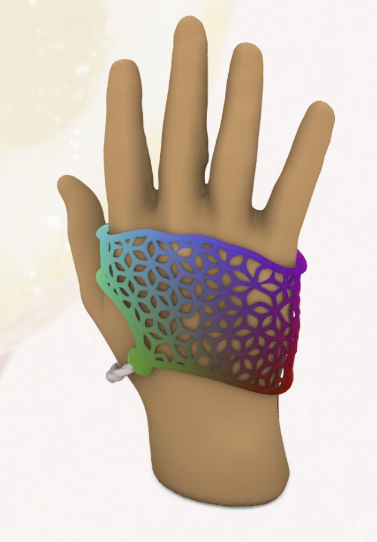

3D Mesh Pattern for a Custom Hand Brace

Designed in Rhino/Grasshopper, this project explores mapping and generating an ergonomic 3D mesh that
conforms to the user's hand.
The goal: combine aesthetics, comfort, and manufacturability for a functional, visually unique orthosis.
The goal: combine aesthetics, comfort, and manufacturability for a functional, visually unique orthosis.
Project Overview
The hand brace uses a custom-generated mesh inspired by organic geometry and industrial ornamentation. MediaPipe and anatomical scanning provide user-specific hand geometry, while parametric algorithms create a hexagonal, citron-like 3D mesh that offers flexibility and precise support.
- Technologies: Rhino 3D, Grasshopper, MediaPipe, Python scripting
- My Role: Computational designer, algorithm developer, digital fabricator
Creation Process
-
Importing & Mapping the Hand Mesh:
- Imported user hand scan (OBJ/STL) into Rhino/Grasshopper.
- Used MediaPipe to precisely detect key hand joint points and mapped these landmarks onto the mesh surface, preserving each user’s anatomy.
-
Mesh Modification & Anatomical Adjustment:
- Applied Boolean Difference and manual algorithms to remove or carve out material at pressure-prone bony areas, for comfort.
- Created voids for flexibility and precise fitting using data-driven rules or anatomical input.
-
3D Mesh Pattern Generation:
- Generated a parametric hexagonal grid along the hand mesh surface.
- Used movement sliders to shift mesh points in positive/negative Z directions for a “citron/star” surface geometry.
- Connected the centers and vertices to generate star and triangle features for a unique, functional mesh pattern.
-
Organic Blending & Smoothing:
- Blended hexagons into a continuous, natural surface with subdivision, smoothing, and attractor controls.
- Refined thickness and surface details for user comfort and a striking organic look.
-
Finalization:
- Unified all mesh components before export, checked fit and printability.
- Exported for 3D printing (STL/OBJ) with manufacturing constraints in mind.
Key Design Considerations
- Comfort: Carefully placed material and anatomical reliefs for pressure-free support.
- Functionality: Support with freedom for hand movement where needed.
- Aesthetics: Mesh balances structural precision and organic inspiration; visually attractive for consistent use.
- Manufacturability: All geometry planned for robust, print-ready fabrication.
Outcome & Reflections
The final brace adapts elegantly to the user’s hand, providing a visually engaging and practical wearable. By merging computational design with real human anatomy, this project demonstrates the creative intersection of digital craft and medical function.
Designer: Aelon Farkash